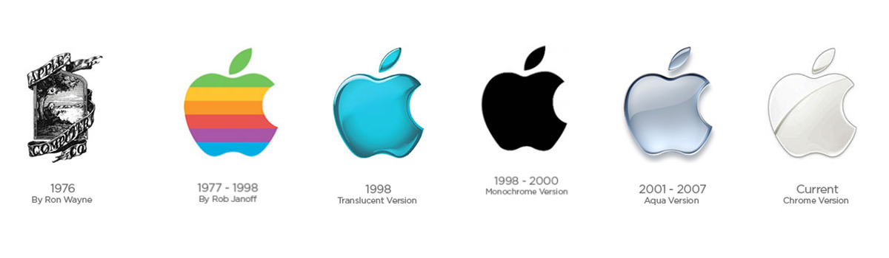
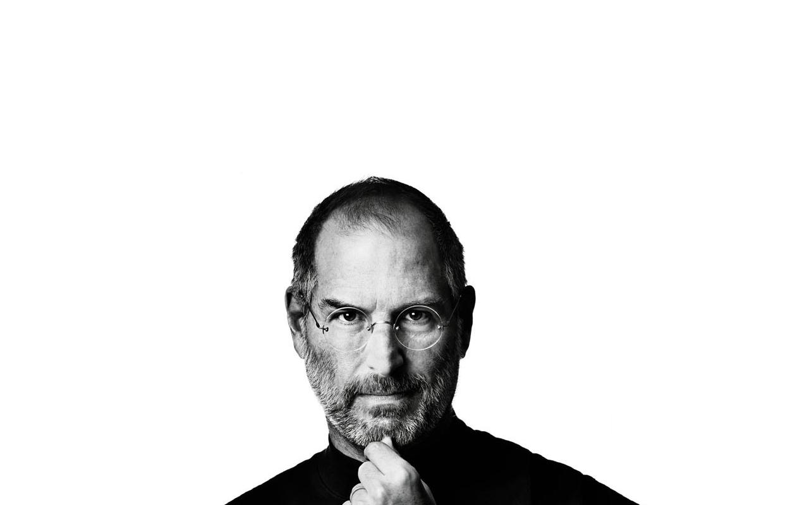
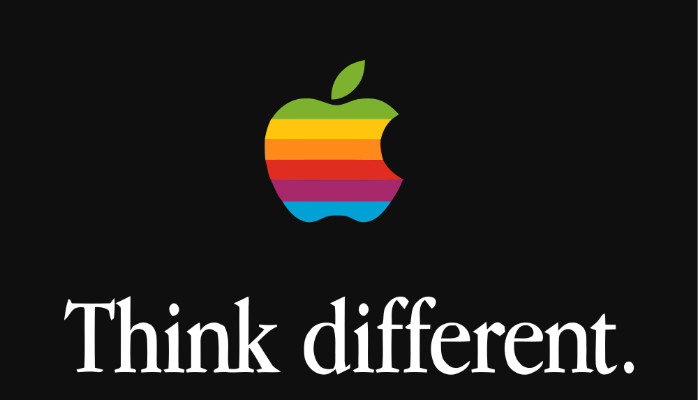

Logo da Apple, sua origem, evolução e curiosidades
Origem do logotipo
O primeiro logotipo da famosa Apple foi bem diferente do que estamos acostumados a ver nos dias de hoje. Criado em 1976 por Ronald Wayne (terceiro cofundador da empresa), retratava Isaac Newton no momento da descoberta da gravidade, quando uma maçã teria caído sobre sua cabeça enquanto lia um livro.
Evolução do logotipo
A partir do segundo logotipo, de 1977, percebemos uma drástica mudança com relação ao primeiro, adotando um visual muito mais simples e moderno. Este padrão se manteve nos logotipos seguintes, alterando apenas detalhes.
Logotipo atual
A Apple foi, aos poucos, se distanciando do visual metálico e cromado, passando a adotar uma forma mais minimalista. Essa mudança se mantém até os dias de hoje, em todos os produtos da empresa.
O logotipo atual costuma aparecer nas cores preto, branco e cinza. Em alguns produtos, é comum a cor do logotipo seguir a cor do aparelho.
Steve Jobs, o criador de tudo
Considerado um dos empresários mais visionários dos últimos tempos, Steve Jobs antecipou o avanço da tecnologia e computação, conseguindo transformar em uma verdadeira experiência para os usuários. Tudo isso em uma época em que computadores nas casas não eram uma necessidade.
Steve Jobs sempre mostrava sua empresa como revolucionária, tendo por objetivo mexer com as estruturas do mercado e de certa forma, mudar o mundo. Por muitas pessoas foi criticado, chamado de louco e outros termos, porém os seus produtos realmente mudaram a forma como vemos a tecnologia.
Mas por que o nome 'Apple'?
Por iniciar com a letra 'A', o nome da marca apareceria na frente da maioria dos concorrentes. Além disso, era uma aposta um tanto quanto inusitada associar uma maçã à computadores e tecnologia.
Um outro fato interessante é que atualmente, para aproximar o consumidor, o 'i' que aparece no nome de alguns produtos da Apple, como iPhone e ipad, significa 'I', em iglês, 'eu'. Anteriormente, ele se referia a 'internet'.